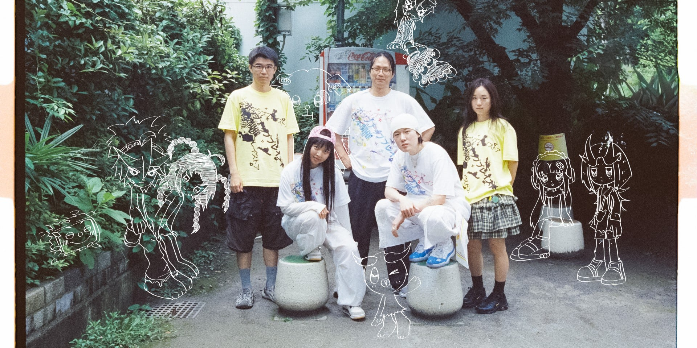

REPORT SNAPSHOT
CURRENT 5 MEMBERS
서울 기반의 다학제 창작 집단으로 느슨하게 결성
《Memory Overdrive》 13곡·35분 51초
캐릭터 → 음악 → 게임 → 영상 → 공간·굿즈
사진: Azikazin Magic World, 2026, Tokyo / Photo by Mado Uemura · Rolling Stone Japan 기사 이미지 사용